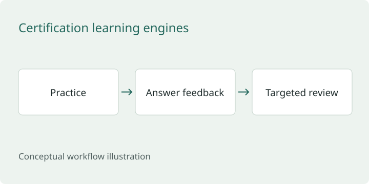

Splunk login detection
Investigated why a login rule missed two expected findings. Corrected results matched all five training cases.
Read case studyOpen an investigation, review the engineering work, or see the study software.
Prefer a role-based review? Choose a hiring path ↗
Four separate controlled exercises, each with its own data and evidence.
Investigated why a login rule missed two expected findings. Corrected results matched all five training cases.
Read case study
Reviewed encoded PowerShell and certutil commands, separating two review candidates from benign controls.
Read case study
Traced DNS failures and HTTP activity to specific frames in a generated 20-packet capture.
Read case studyChecked four intentional HTTP weaknesses, applied fixes, and repeated the same checks.
Read case studyPublic architecture summaries of private engineering projects.

Research infrastructure designed to keep experiments repeatable and the evidence behind results traceable.
Read case study
Research tooling designed to keep source support, conflicting observations, and permission to act distinct.
Read case study
Security+ and SC-900 study applications with adaptive practice, answer explanations, saved progress, and session resume.
Read case studyTry the public browser demos · Review the evidence directory